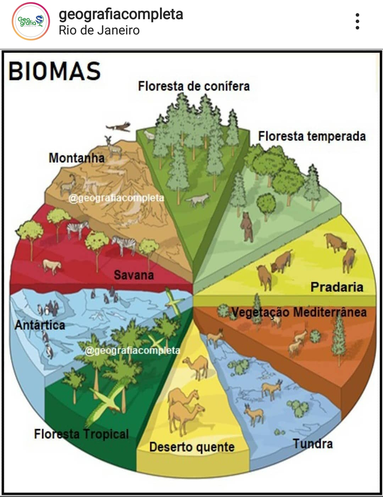
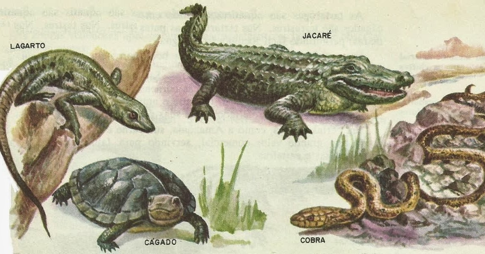
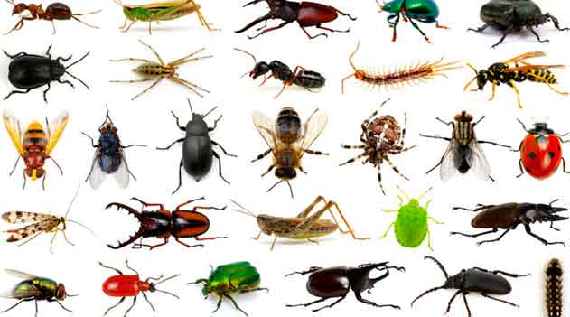

A FLORA
Quando falamos em diversidade de plantas
de uma determinada região, estamos falando da
flora de uma área. A flora de cada local é
bastante distinta e está diretamente relacionada
com fatores como temperatura, radiação luminosa,
regime de chuva e solo. Sendo assim, as plantas
existentes no nosso país nem sempre são encontradas
em outras áreas do mundo

>
A FLORA
O conjunto de animais que vive e compartilha de um
mesmo ambiente ou espaço geográfico é chamado de fauna.
O termo está ligado, também à flora, conjunto de vegetais
e plantas de determinada região. Assim, por constituírem
as características de lugar, possuem variedades dependendo
do ambiente em que se encontram.

MICRORGANISMOS
Microrganismos são animais de tamanho diminuto que só podem
ser visualizados com o uso de microscópio. No solo esses
organismos constituem populações com muitos bilhões de
indivíduos e, muitas vezes, as colônias podem ser observadas
a olho nu. Os microrganismos atuam na transformação e
decomposição da matéria orgânica, na ciclagem de nutrientes
e no fluxo de energia no solo. Exemplos desses organismos:
bactérias, leveduras, fungos, actinomicetos, protozoários e algas.